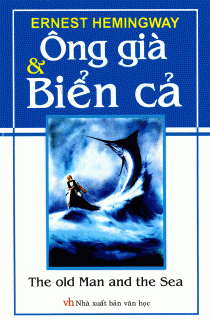

|  |
Ông già và biển cả Danh sách chương Đọc từ đầu |
|
Tác giả: Ernest Hemingway Mục sách: Văn học nước ngoài Văn học kinh điển Tình trạng: Hoàn(full) |
Ông già và biển cả (tên tiếng Anh: The Old Man and the Sea) là một tiểu thuyết ngắn được Ernest Hemingway viết ở Cuba năm 1951 và xuất bản năm 1952. Nó là truyện ngắn dạng viễn tưởng cuối cùng được viết bởi Hemingway. Đây cũng là tác phẩm nổi tiếng và là một trong những đỉnh cao trong sự nghiệp sáng tác của nhà văn Hemingwa. Tác phẩm này đoạt giải Pulitzer cho tác phẩm hư cấu năm 1953. Nó cũng góp phần quan trọng để nhà văn được nhận Giải Nobel văn học năm 1954. Trong tác phẩm này ông đã triệt để dùng nguyên lý mà ông gọi là “tảng băng trôi”, chỉ mô tả một phần nổi còn lại bảy phần chìm, khi mô tả sức mạnh của con cá, sự chênh lệch về lực lượng, về cuộc chiến đấu không cân sức giữa con cá hung dữ với ông già. Tác phẩm ca ngợi niềm tin, sức lao động và khát vọng của con người. |